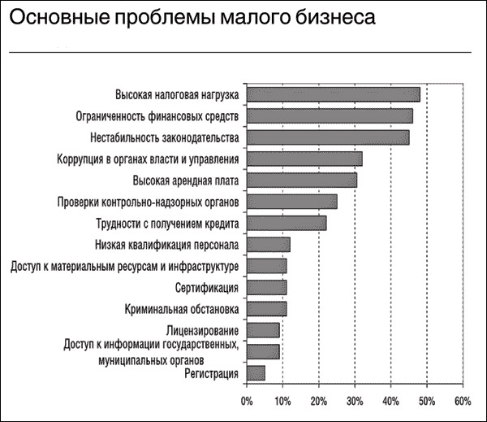

Малый бизнес – сущность и его роль в экономике
Малый бизнес – очень емкое понятие. Как следует из самого определения, «малый бизнес» – это предпринимательская деятельность, осуществляемая субъектами рыночной экономики при определенных установленных законами, государственными органами или другими представительными организациями критериях. Как показывает мировая практика, основным критериальным показателем, на основе которого предприятия различных организационно правовых форм относятся к субъектам малого предпринимательства, является в первую очередь средняя численность работников, занятых за отчетный период на предприятии. В ряде научных работ под малым бизнесом понимается деятельность, осуществляемая небольшой группой лиц, или предприятие, управляемое одним собственником.
Основные правовые формы бизнеса
Фирма, находящаяся в единоличном владении наиболее простая форма для мелкого бизнеса. Обычно для открытия такого предприятия достаточно лишь получить лицензию от местных властей и зарегистрировать торговое имя. Деловые партнерства представляют собой организацию из двух и более лиц, между которыми заключается контракт на совместное владение предприятием. Партнерства могут быть полными и ограниченными. Третий тип - корпорации. Это организационная форма наиболее характерна для крупного и среднего бизнеса, хотя из общего числа всех корпораций, например в США, 98% - небольшие семейные фирмы.
Проблемы малого бизнеса

© Манжос Вероника Олеговна